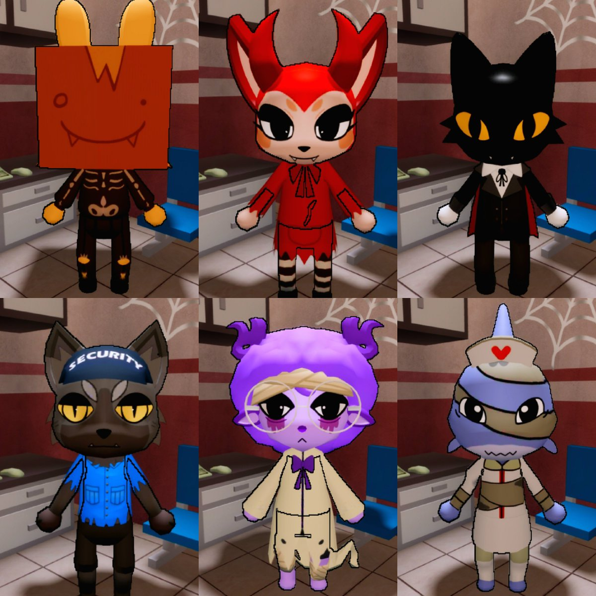

Animal Hospital (Anomaly) a intrat în eventul de Halloween, cu skin-uri limitate

Animal Hospital (Anomaly) e oficial în modul Halloween. Titlul jocului pe Roblox e acum „[🎃 EVENT] Animal Hospital (Anomaly) 🧪”.
Update-ul a intrat sâmbătă, 17 octombrie, pe la 22:27 (ora României), după pagina jocului de pe Roblox.
Skin-urile limitate de Halloween:
- Informația vine de la contul de știri al comunității, @aha_newsupdates (nu de la dezvoltatori)
- Postarea lor: „Halloween limited Skins for Animal Hospital are here”, cu imaginea skin-urilor
- Fiind limitate, merită luate cât ține eventul
Cifrele jocului, citite marți, 20 oct, la prânz:
- ~2,44 miliarde de vizite
- ~19K jucători online în acel moment
Tu pe care skin îl iei primul? 🎃
Update 21 oct: Mimic din Animal Hospital e unul dintre cei 9 monștri din The Hollow (eventul oficial Roblox, 23 oct – 2 nov) — detalii aici: https://pyromanc3r777.github.io/vexu-hq/posts/the-hollow-eventul-de-halloween-al-roblox-vine-pe-22-octombrie.html
Vezi și: meme-ul de 7 secunde cu asistenta din Animal Hospital, „Wait for the Ending 🤣”: https://pyromanc3r777.github.io/vexu-hq/posts/asistenta-din-animal-hospital-meme-7-secunde-asteapta-finalul.html
Follow pe TikTok @vexu_online și abonare pe YouTube la VEXU Online. Follow = Au ce bile! 💥